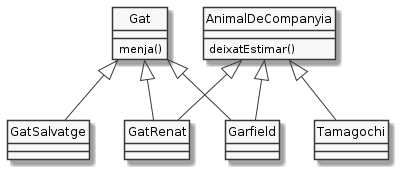

Interfícies¶
Què fa que un animal pugui ser considerat de companyia. Pot ser difícil de dir, doncs hi ha una gran varietat d’éssers que la gent és capaç de considerar animals de companyia; des d’un conillet a un insecte pal, passant per un tamagochi!
Suposem que el comportament o característica que fa que un animal sigui de companyia és que es deixa estimar. Suposem també que tant el Renat com el Garfield són animals de companyia mentre que el gat salvatge, per alguna inexplicable raó, no ho és.

D’aquesta manera, el gat Renat seria subclasse de Gat i d’animal de companyia i, així, heretaria tant els mètodes de l’una com de l’altra superclasse. El problema és que, com ja sabem, Java no admet l’herència múltiple.
Per resoldre aquest tipus de situacions es va incorporar un nou tipus de tipus anomenat interfaces. La traducció al nostre idioma seria interfície però mantindré el mot en anglès per deixar molt clar a què em refereixo.
Considera el següent codi:
1 2 3 | public interface AnimalDeCompanyia {
void deixatEstimar();
}
|
Les interfaces reemplacen la paraula classe per interface. Per
la resta, són força similars, excepte que les signatures dels mètodes no
van seguides del cos sinó que acaben en punt i coma com en els mètodes
abstractes, però sense la necessitat de marcar-los amb abstract.
Com direm que el gat Renat és un animal de companyia?
1 2 3 4 5 6 7 8 9 10 11 12 | class GatRenat implements AnimalDeCompanyia {
private int vides = 7;
public int getVides() { return vides; }
public void setVides(int vides) { this.vides = vides; }
public void deixatEstimar() {
System.out.println("Renat es deixa estimar");
}
public static void main(String[] args){
GatRenat renat = new GatRenat();
renat.deixatEstimar();
}
}
|
Com veus, la notació és molt similar a la que coneixem d’herència. En
comptes de extends, però, aquí fem servir implements.
Fixa’t que, per a implementar una interface, ho indiquem amb
implements. Per altra banda, implementar un mètode de la interface
implica simplement escriure el mètode incloent el cos.
Malgrat GatRenat no és subclasse de AnimalDeCompanyia, Java
accepta la relació i permet que funcioni el polimorfisme. És a dir,
podríem haver declarat renat com AnimalDeCompanyia:
9 | AnimalDeCompanyia renat = new GatRenat();
|
Però no dèiem que en Renat també era un gat? Cap problema:
1 2 3 4 5 6 7 8 9 10 11 12 13 14 15 16 17 18 19 | class Gat {
private int vides = 7;
public int getVides() { return vides; }
public void setVides(int vides) { this.vides = vides; }
private void menja(Menjar menjar) {
System.out.printf("El gat menja %s%n", menjar);
}
}
class GatRenat extends Gat implements AnimalDeCompanyia {
public void deixatEstimar() {
System.out.println("Renat es deixa estimar");
}
public static void main(String[] args){
GatRenat renat = new GatRenat();
renat.deixatEstimar();
renat.menja();
}
}
|
Fixa’t com extends apareix abans de implements.
Una interface pot tenir més d’un mètode. Per exemple, un animal de companyia podria també deixar-se quidar.
1 2 3 4 | public interface AnimalDeCompanyia {
void deixatEstimar();
void deixatCuidar();
}
|
La definició d’una classe que implementi una interface ha d’incloure la
definició de tots els mètodes que defineix la interface, altrament
el compilador no ens deixarà passar. Així, el nostre GatRenat si vol
ser un AnimalDeCompanyia ha d’implementar també deixatCuidar().
Encara més. En Renat no només és un gat i un animal de companyia. Una altra cosa que és és un excel·lent cuiner.
1 2 3 | public interface Cuinetes {
void cuina(String plat);
}
|
Per indicar que en Renat també és un Cuinetes, simplement li afegim la
nova interface a la llista de les implementacions:
1 2 3 4 5 6 7 8 9 10 11 12 13 14 15 16 | class GatRenat extends Gat implements AnimalDeCompanyia, Cuinetes {
public void deixatEstimar() {
System.out.println("Renat es deixa estimar");
}
public void deixatCuidar() {
System.out.println("Renat juga");
}
public void cuina(String plat) {
System.out.printf("Renat prepara %s%n", plat);
}
public static void main(String[] args){
GatRenat renat = new GatRenat();
renat.deixatEstimar();
renat.cuina("sardines a la Rochefort");
}
}
|
Com veus, simplement hem d’afegir la nova interface en forma de llista
separada per comes, a partir de implements. No importa l’ordre però sí
que GatRenat defineixi el mètode cuina()
Posem encara una altra característica sobre la taula: en Renat també és un gourmet que li agrada molt menjar. Així, la interface seria:
1 2 3 | interface Gourmet {
void menja(Menjar menjar);
}
|
No obstant, el Renat no canvia gaire en la seva definició. Només inclou la nova interface:
1 2 3 4 5 6 7 8 9 10 11 | class GatRenat extends Gat implements AnimalDeCompanyia, Cuinetes, Gourmet {
public void deixatEstimar() {
System.out.println("Renat es deixa estimar");
}
public void deixatCuidar() {
System.out.println("Renat juga");
}
public void cuina(String plat) {
System.out.printf("Renat prepara %s%n", plat);
}
}
|
Com és possible que funcioni sense que calgui implementar menja()?
Doncs perquè aquest mètode l’hereta de Gat! Això també pot passar quan
més d’una interface defineix exactament el mateix mètode. Cap problema.
La representació en UML vindria a ser:
![@startuml
hide circle
skinparam monochrome true
skinparam classAttributeIconSize 0
interface AnimalDeCompanyia {
deixatEstimar()
deixatCuidar()
}
interface Gourmet {
menja(Menjar)
}
interface Cuinetes {
cuina(String)
}
class Gat {
menja()
}
class GatRenat implements AnimalDeCompanyia
class Garfield implements AnimalDeCompanyia
class Tamagochi implements AnimalDeCompanyia
class GatRenat extends Gat
class Garfield extends Gat
class GatSalvatge extends Gat
class GatRenat implements Cuinetes
class GatRenat implements Gourmet
@enduml](_images/plantuml-1ac9919ebe3b8659b0a2f7b6bd279c733c95427c.png)
 Exercici 04_27. Gat Renat amb Interfaces
Exercici 04_27. Gat Renat amb Interfaces
Recapitulant¶
Les interfaces són un mecanisme molt flexible que permet definir el comportament (mètodes) de les classes, de manera que puguem arribar a no necessitar conèixer la classe concreta amb que estem treballant mentre tinguem clar que respon al comportament que esperem.
Una interface especifica un conjunt de signatures de mètodes que hauran de ser definits per qualsevol classe que implementi la interface.
Un dels avantatges de les interfaces és, gràcies al polimorfisme, la possibilitat de desenvolupar independentment peces de codi que només es comprometen a respectar un contracte: la implementació de la interface.
Donat que una classe pot implementar un nombre indefinit d”interfaces, aquest mecanisme resol parcialment l’aparent limitació del Java amb l’herència múltiple.